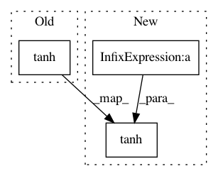

2767c948afa434f863df3b5eb1946a032dfba588,spotlight/sequence/representations.py,CNNNet,user_representation,#CNNNet#,324
Before Change
(dilation - 1))
x = F.pad(x, (0, 0, receptive_field_width - 1, 0))
x = F.tanh(cnn_layer(x))
x = x.squeeze(3)
return x[:, :, :-1], x[:, :, -1]
After Change
(0, 0, 1, 0))
x = F.pad(sequence_embeddings,
(0, 0, receptive_field_width, 0))
x = F.tanh(self.cnn_layers[0](x)) + residual
for (cnn_layer, kernel_width, dilation) in zip(self.cnn_layers[1:],
self.kernel_width[1:],
self.dilation[1:]):
receptive_field_width = (kernel_width +
(kernel_width - 1) *
(dilation - 1))
residual = x
x = F.pad(x, (0, 0, receptive_field_width - 1, 0))
x = F.tanh(cnn_layer(x)) + residual
x = x.squeeze(3)
In pattern: SUPERPATTERN
Frequency: 3
Non-data size: 3
Instances
Project Name: maciejkula/spotlight
Commit Name: 2767c948afa434f863df3b5eb1946a032dfba588
Time: 2017-07-13
Author: maciej.kula@gmail.com
File Name: spotlight/sequence/representations.py
Class Name: CNNNet
Method Name: user_representation
Project Name: explosion/thinc
Commit Name: 14dff43845b836f7e94035ca42f967a484dfb8a3
Time: 2020-01-04
Author: honnibal+gh@gmail.com
File Name: thinc/backends/ops.py
Class Name: Ops
Method Name: lstm
Project Name: sony/nnabla-examples
Commit Name: 93ddba439d54cda15f22ffd9ca52318cfba01475
Time: 2019-05-14
Author: Akio.Hayakawa@sony.com
File Name: speech-synthesis/WaveNet/model.py
Class Name: waveNet
Method Name: residual_block